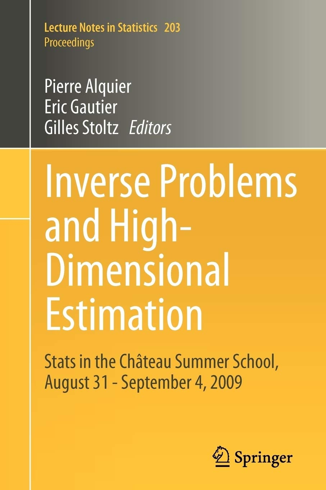

P. Alquier, E. Gautier, G. Stoltz (Editors), Inverse Problems and High-Dimensional Estimation, 2011, Stats in the Chateau Summer School, Lecture Notes in Statistics n°203, Springer.

2017-2019: with Franck Malherbet, co-director of the collection "Economie et Statistique Avancée" by ECONOMICA, publishing mostly courses taught at ENSAE Paris.
P. Alquier, M. Gerber, Universal Robust Regression via Maximum Mean Discrepancy, 2020. Preprint arxiv:2006.00840.
B.-E. Chérief-Abdellatif, P. Alquier, Finite Sample Properties of Parametric MMD Estimation: Robustness to Misspecification and Dependence, 2019. Preprint arxiv:1912.05737.
L. Carel, P. Alquier, Simultaneous Dimension Reduction and Clustering via the NMF-EM Algorithm. To appear in Advances in Data Analysis and Classification, 2020. Available on arXiv:1709.03346.
P. Alquier, J. Ridgway , Concentration of Tempered Posteriors and of their Variational Approximations. To appear in The Annals of Statistics, 2020. Available on arXiv:1706.09293.
2020
P. Alquier, K. Bertin, P. Doukhan, R. Garnier, High Dimensional VAR with Low-rank Transition. Statistics and Computing, 2020, vol. 30, pp. 1139-1153. Available on arXiv:1905.00959.
B.-E. Chérief-Abdellatif, P. Alquier, MMD-Bayes: Robust Bayesian Estimation via Maximum Mean Discrepancy. Proceedings of The 2nd Symposium on Advances in Approximate Bayesian Inference (AABI), Proceedings of Machine Learning Research, 2020, vol. 118, pp. 1-21. Available on arXiv:1909.13339.
2019
P. Alquier, N. Marie, Matrix Factorization for Multivariate Time Series Analysis, The Electronic Journal of Statistics, 2019, vol. 13, no. 2, pp. 4346-4366. Available on arXiv: 1903.05589.
B.-E. Chérief-Abdellatif, P. Alquier, M. E. Khan, A Generalization Bound for Online Variational Inference. Proceedings of The Eleventh Asian Conference on Machine Learning, Proceedings in Machine Learning Research, 2019, vol. 101, pp. 662-677. Best paper award. Available on arXiv:1904.03920.
P. Alquier, P. Doukhan, X. Fan, Exponential inequalities for nonstationary Markov Chains. Dependence Modeling, 2019, vol. 7, pp. 150-168. Available on arXiv:1808.08811.
P. Alquier, V. Cottet, G. Lecué, Estimation Bounds and Sharp Oracle Inequalities of Regularized Procedures with Lipschitz Loss Functions. The Annals of Statistics, 2019, vol. 47, no. 4, pp. 2117-2144. Link to the supplementary material . Available on arXiv:1702.01402.
F. Maire, N. Friel , P. Alquier, Informed Sub-Sampling MCMC: Approximate Bayesian Inference for Large Datasets. Statistics and Computing, 2019, vol. 29., no. 3, pp. 449-482. Available on arXiv:1706.08327. Improves on the earlier preprint arxiv:1503.04178.
2018
B.-E. Chérief-Abdellatif, P. Alquier, Consistency of Variational Bayes Inference for Estimation and Model Selection in Mixtures, Electronic Journal of Statistics, 2018, vol. 12, no. 2, pp. 2995–3035. Available on arXiv:1805.05054.
P. Alquier, B. Guedj, Simpler PAC-Bayesian Bounds for Hostile Data, Machine Learning, 2018, vol. 107, no. 5, pp. 887-902. Available on arXiv: 1610.07193.
V. Cottet, P. Alquier, 1-bit Matrix Completion: PAC-Bayesian Analysis of a Variational Approximation, Machine Learning, 2018, vol. 107, no. 3, pp. 579-603. Available on arXiv: 1604.04191.
2017
T. T. Mai, P. Alquier, Pseudo-Bayesian Quantum Tomography with Rank-adaptation, Journal of Statistical Planning and Inference, 2017, vol. 184, pp. 62-76. Available on arXiv: 1605.05933.
P. Alquier, T. T. Mai, M. Pontil, Regret Bounds for Lifelong Learning, Proceedings of the 20th International Conference on Artificial Intelligence and Statistics (AISTATS), Proceedings of Machine Learning Research, 2017, vol. 54, pp. 261-269. Available on arXiv: 1610.08628.
L. Carel, P. Alquier, Non-negative Matrix Factorization as a Pre-processing tool for Travelers Temporal Profiles Clustering Proceedings of the 25th European Symposium on Artificial Neural Networks, Computational Intelligence and Machine Learning (ESANN), 2017, M. Verleysen Edt., i6doc.com Publ., pp. 417-422.
P. Alquier, B. Guedj, An Oracle Inequality for Quasi-Bayesian Non-negative Matrix Factorization, Mathematical Methods of Statistics, 2017, vol. 26, no. 1, pp. 55-67. There is a mistake in the proof of the main result in the published version; the proof in the latest version on arXiv is fixed: arXiv:1601.01345.
2016
P. Alquier, J. Ridgway , N. Chopin , On the Properties of Variational Approximations of Gibbs Posteriors, Journal of Machine Learning Research, 2016, vol. 17, no. 239, pp. 1-41. Available on arXiv:1506.04091.
P. Alquier, N. Friel , R. G. Everitt , A. Boland , Noisy Monte-Carlo: Convergence of Markov Chains with Approximate Transition Kernels, Statistics and Computing, 2016, vol. 26, no. 1, pp. 29-47. Available on arXiv:1403.5496
2015
T. T. Mai, P. Alquier, A Bayesian Approach for Matrix Completion: Optimal Rate under General Sampling Distribution, Electronic Journal of Statistics, 2015, vol. 9, pp. 823-841. Available on arXiv:1408.5820.
2014
J. Ridgway , P. Alquier, N. Chopin , F. Liang, PAC-Bayesian AUC Classification and Scoring, Advances in Neural Information Processing Systems 27 (NIPS), 2014, Z. Ghahramani, M. Welling, C. Cortes, N.D. Lawrence and K.Q. Weinberger Eds., Curran Associates Inc., pp. 658-666. Available on arXiv:1410.1771
2013
P. Alquier, X. Li, O. Wintenberger, Prediction of Time Series by Statistical Learning: General Losses and Fast Rates, Dependence Modeling, 2013, vol. 1, pp. 65-93. Available on arXiv:1211.1847, contains the results of the earlier preprint 1202.4283
P. Alquier, Bayesian Methods for Low-rank Matrix Estimation: Short Survey and Theoretical Study, Algorithmic Learning Theory (ALT), 2013, S. Jain, R. Munos, F. Stephan and T. Zeugmann Eds., Springer - Lecture Notes in Artificial Intelligence n. 8139, pp. 309-323. There is a mistake in the proof of the main result in the published version; the proof in the latest version on arXiv is fixed: arXiv:1306.3862
P. Alquier, C. Butucea, M. Hebiri, K. Meziani, T. Morimae, Rank Penalized Estimation of a Quantum System, Physical Review A, 2013, vol. 88, no. 3, 032113. Available on arXiv:1206.1711
P. Alquier, K. Meziani, G. Peyré, Adaptive Estimation of the Density Matrix in Quantum Homodyne Tomography with Noisy Data, Inverse Problems, 2013, vol. 29, no. 7, 075017. Available on arXiv:1301.7644
P. Alquier, G. Biau, Sparse Single-Index Model, Journal of Machine Learning Research, 2013, vol. 14, pp. 243-280. Available on arXiv:1101.3229
B. Guedj, P. Alquier, PAC-Bayesian Estimation and Prevision in Sparse Additive Models, Electronic Journal of Statistics, 2013, vol. 7, pp. 264-291. Available on arXiv:1208.1211, also test the pacbpred package for R written by B. Guedj.
2012
P. Alquier, X. Li, Prediction of Quantiles by Statistical Learning and Application to GDP Forecasting, Discovery Science (DS), 2012, J.-G. Ganascia, P. Lenca and J.-M. Petit Eds., Springer - Lecture Notes in Artificial Intelligence n. 7569, pp. 22-36. Available on arXiv:1202.4294
P. Alquier, M. Hebiri, Transductive Versions of the LASSO and the Dantzig Selector, Journal of Statistical Planning and Inference, 2012, vol. 142, no. 9, pp. 2485-2500. Available on arXiv:0906.0652
P. Alquier, O. Wintenberger, Model Selection for Weakly Dependent Time Series Forecasting, Bernoulli, 2012, vol. 18, no. 3, pp. 883-913. Available on arXiv:0902.2924
2011
P. Alquier, M. Hebiri, Generalization of L1 Constraints for High Dimensional Regression Problems, Statistics and Probability Letters, 2011, vol. 81, no. 12, pp. 1760-1765. Available on arXiv:0811.0072
P. Alquier, P. Doukhan, Sparsity Considerations for Dependent Variables, Electronic Journal of Statistics, 2011, vol. 5, pp. 750-774. Available on arXiv:1102.1615
P. Alquier, K. Lounici, PAC-Bayesian Theorems for Sparse Regression Estimation with Exponential Weights, Electronic Journal of Statistics, 2011, vol. 5, pp. 127-145. Available on arXiv:1009.2707
2010
P. Alquier, An Algorithm for Iterative Selection of Blocks of Features, Algorithmic Learning Theory (ALT), 2010, M. Hutter, F. Stephan, V. Vovk and T. Zeugmann Eds., Springer - Lecture Notes in Artificial Intelligence n. 6331, pp. 35-49. You can download a corrected version, also test the ISBF package for R.
2008
P. Alquier, PAC-Bayesian Bounds for Randomized Empirical Risk Minimizers, Mathematical Methods of Statistics, 2008, vol. 17, no. 4, pp 279-304. Available on arXiv:0712.1698
P. Alquier, LASSO, Iterative Feature Selection and the Correlation Selector: Oracle Inequalities and Numerical Performances, Electronic Journal of Statistics, 2008, vol.2, pp. 1129-1152. Available on arXiv:0710.4466
P. Alquier, Density Estimation with Quadratic Loss, a Confidence Intervals Method, ESAIM: P&S, 2008, vol. 12, pp. 438-463. A preliminary version is available on arXiv:0603349
P. Alquier, Iterative Feature Selection in Least Square Regression Estimation, Annales de l'Institut Henri Poincaré, B (Proba. Stat.), 2008, vol. 44, no. 1, pp 47-88. Available on arXiv:0511299, also test this method through the ISBF package for R.
P. Alquier, Constributions to Statistical Learning in Sparse Models, Habilitation Thesis, 2013, Université Paris 6. You can also download the slides.
P. Alquier, Transductive and Inductive Adaptative Inference for Density and Regression Estimation, PhD Thesis, 2006, Université Paris 6. Under the supervision of Prof. Olivier Catoni. You can also download the slides.
P. Alquier, Analyse bayésienne de modèles de mélanges: Approche par MCMC à sauts réversibles, Mémoire de DEA (MSc thesis), 2003, Université Paris 6. Under the supervision of Prof. Dominique Picard.
L. Carel, P. Alquier, Prévision de la fréquentation d’un réseau de transport à l’aide de modèles additifs généralisés, 50èmes Journées de Statistique de la SFDS, 2018.
P. Alquier, V. Cottet, N. Chopin, J. Rousseau, Bayesian Matrix Completion: Prior Specification, 2014. Technical report. Preprint arXiv:1406.1440.
B. Guedj, P. Alquier, G. Biau, E. Moulines, Prévision PAC-Bayésienne pour le Modèle Additif sous Contrainte de Parcimonie, 44èmes Journées de Statistique de la SFDS, 2012. Short French version of the EJS 2013 paper.
P. Alquier, Sélection Itérative de Blocs de Variables, 43èmes Journées de Statistique de la SFDS, 2011. Short French version of the ALT 2010 paper, with an updated bibliography.
P. Alquier, O. Wintenberger, Model Selection and Randomization for Weakly Dependent Time Series Forecasting, 41èmes Journées de Statistique de la SFDS, 2009. Short preliminary version of the Bernoulli 2012 paper.
P. Alquier, M. Hebiri, LASSO Transductif et Autres Généralisations, 41èmes Journées de Statistique de la SFDS, 2009. Short preliminary version (in French) of the JSPI 2011 paper.